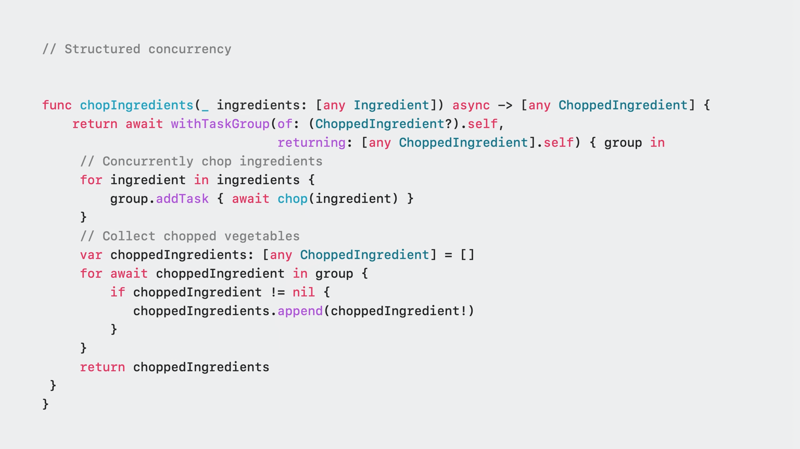
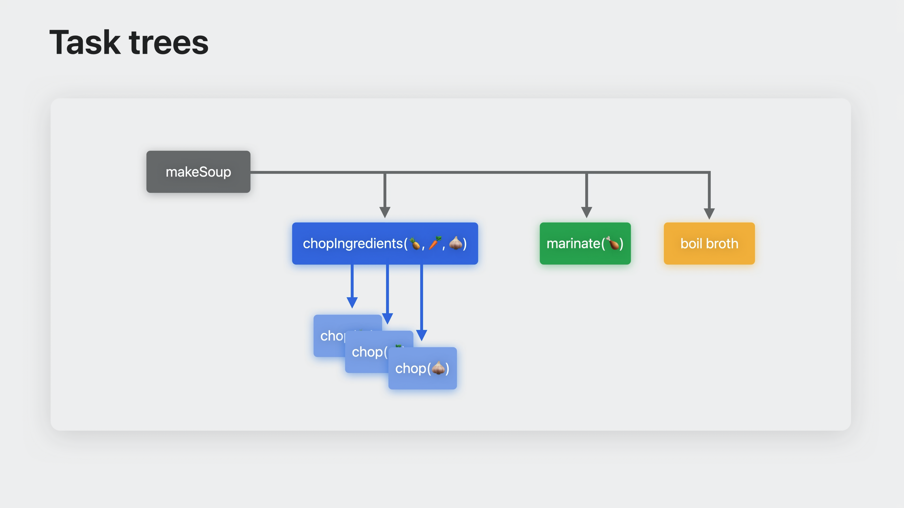
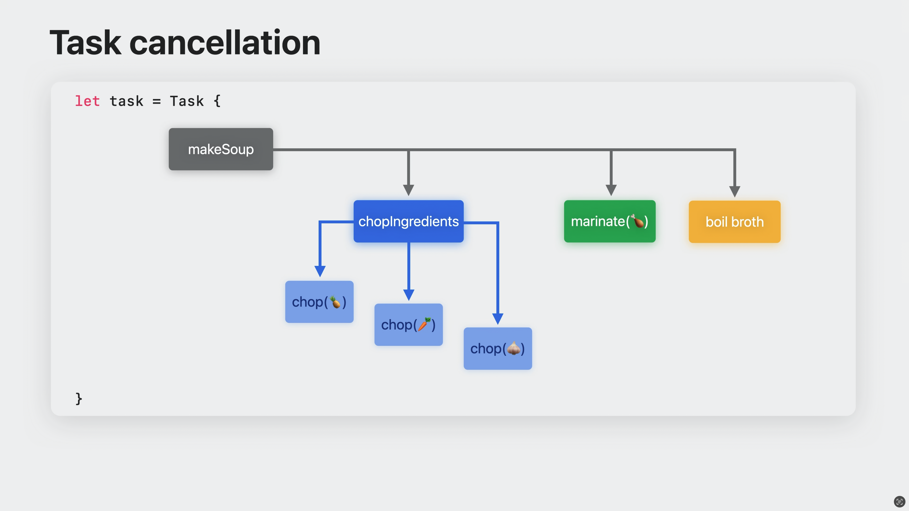
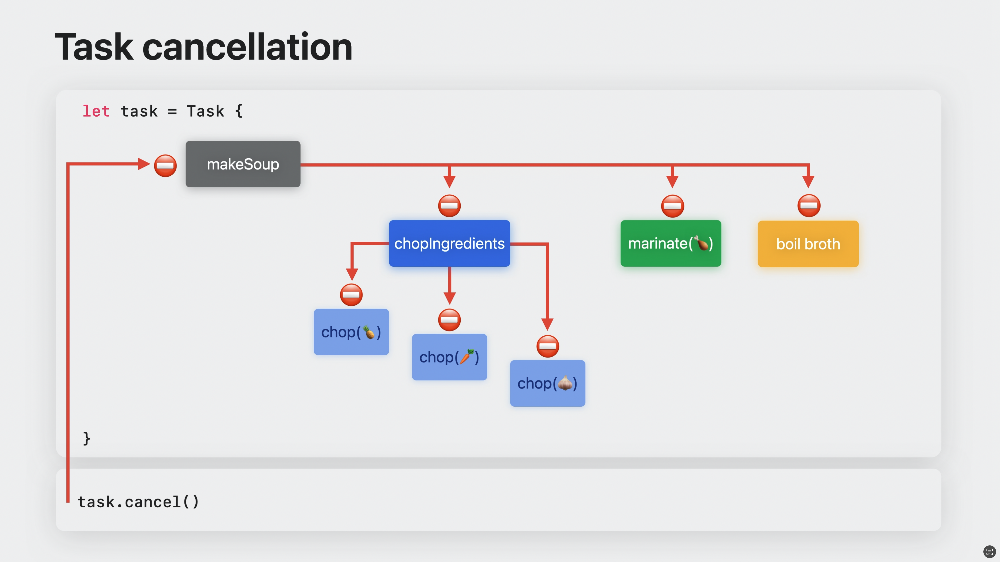

О чем эта книга ?
В данной книге я попытался рассказать о фундаментальных основах SC на языке Swift, принципах и разнице между Unstrured Concurrency, ручной и автоматической отмене задач, приоритете задачи и отладки.
Зачем нам нужен новый подход ?
Structured concurrency (далее SC) позволяет рассуждать о конкуретном вычислении используя специальные точки, позволяет узнать о разветвлениях, конкурентных вычислениях и увидеть результат вычислений, подобно тому, как работает блок условия if else в синхронном коде.
Конкурентная задача начинается, когда вы используете async let, создаете открепленную (detached) задачу или группу задач.
Задача возобновляются в точке приостановке (suspention point), обозначаемой await.
Однако не все задачи являются структурированными.
important
Структурированные задачи создаются с помощью async let и групп задач, а не структурированные — используя Task и Task.detached.

Структурированные задачи живут до конца области видимости, подобно локальным переменным и автоматически отменяются при выходе из области видимости. Такой подход даёт явно понять как долго задача должна жить.
note
Старайтесь, по возможности, использовать SC, вместо не структурированных задач (Unstructured).
О преимуществах SC вы можете прочитать ниже, а пока посмотрим на конкретный пример.
Представьте, что в нашем распоряжении кухня с несколькими шеф поварами, каждый из которых хочет приготовить суп. Приготовление супа состоит из нескольких шагов: нарезка ингридиентов, мариновка курицы, варка бульона и финальное приготовление. Некоторые задачи можно выполнить параллельно, а другие только в определенном порядке.

Посмотрим на нашу функцию приготовления makeSoup.

Возможно вы захотите явно добавить неструктурированные задачи Task { … } к вашим функциям и будете ожидать возвращения значения.
Это подразумевает, что задача будет выполняться конкуретно, но все же это не рекумондуемый способ использовать конкурентность в Swift.
Посмотрите на эту же функцию, но с использованием SC.

Поскольку мы знаем количество дочерних задач, мы можем использовать удобный синтаксис async let.
В этом случае, задачи формируют структурированные отношения с родительской задачей. Чуть позже вы узнаете почему это важно.
makeSoup вызывает несколько асинхронных функций, одна из которых нарезка ингридиентов chopIngridients(…), которая принимает список ингридиентов и использует taskGroup { … } для конкрурентной нарезки.

Вы ознакомились с задачей по приготовлению супа. Самое время посмотреть как выглядит дерево иерархии (Task tree) этой задачи.

Дочерние задачи нашей функции выделены цветными квадратами. Стрелки указывают на отношения между родительскими и дочерними задачами.
Функция makeSoup содержит 3 дочерние задачи:
- Нарезка ингридиентов
chopIngridients(üçç, ü•ï, üßÖ) - Мариновка курицы
marinate(üçó) - Варка бульона
boil broth
Функция chopIngridients(…) использует taskGroup { … } для создания дочерних задач для каждого ингридиента. Мы используем 3 ингридиента, поэтому будут созданы 3 дочерних задачи. Такие родитеские и дочерние отношения формируют дерево задач (task tree).
Про отмену задач сказано в следующей главе.
Unstructured Concurrency
Если SC - это явно упорядоченные отношения между родильской и дочерними задачами, то Unstructured Concurrency — полная противоположность.
UC предлагает больше гибкости в управлении задачей, но ответственность за правильное выполнение этой задачи ложится на вас.
note
Основное отличие Unstructured от Structured — отсуствие родительской задачи!
Task cancellation (отмена задачи)
Отмена задачи необходима для индикации о том, что приложению больше не нужен результат задачи.
В случае отмены, задача должна остановиться, вернув частичный результат или выдать ошибку.
Выполнение задачи можно представить как последовательность периодов, в течение которых она выполнялась. Каждый такой период заканчивается в точке приостановки await или завершает задачу. Такие периоды выполнения представлены экземплярами PartialAsyncTask:
typealias PartialAsyncTask = UnownedJob
https://github.com/apple/swift/blob/8f5980666de3b5c8a7fc6c1ec2891f7f8f91d03b/stdlib/public/Concurrency/PartialAsyncTask.swift#L16
Для взаимодействия с частичным результатом необходимо реализовать кастомный исполнитель (executor).
В примере с супом, мы может остановить приготовление, если клиент ушел, решил заказать пюрешку с котлеткой или пришло время закрыть кухню. Что может привести к отмене задачи ? В случае SC (структурированных задач), задачи отменяются неявно при выходе из области видимости, хотя мы можем вручную вызвать метод cancelAll() для группы задач TaskGroup, чтобы отменить текущие и будущие дочерние задачи.

В случае с неструктурированными задачи, отмена происходит явно с помощью метода cancel().

В результате, отмена родительской задачи приводит к отмене всех дочерних задач.
note
Отмена задач является кооперативной, поэтому дочерние задачи не останавливаются немедленно/мгновенно.
У каждой задачи существует состояние отмены: отменена или не отменена, под капотом это Bool тип данных. За это состояние отвечает свойство isCancelled. Обратите внимание, что не существует способа «отменить отмену».

Отмена задачи является гонкой.
Если задача была отменена до нашей проверки в блоке guard, то метод вёрнет ошибку SoupCancellationError.

Если задача была отменена после блока guard, выполнение функции продолжиться и начнется подготовление к приготовлению супа.

Для того, чтобы вернуть ошибку отмены вместо возвращения частичного результата, мы можем вызвать метод Task.checkCancellation(), который вернёт CancellationError если задача была отменена:
@_unavailableInEmbedded
public static func checkCancellation() throws {
if Task<Never, Never>.isCancelled {
throw _Concurrency.CancellationError()
}
}
@available(SwiftStdlib 5.1, *)
public struct CancellationError: Error {
// никаких дополнительный свойст, отмена должна быть легковесной
public init() {}
}

important
Очень важно проверить отмену задачи перед выполнением затратной работы.
Проверка на отмену является синхронным методом, поэтому любая функция, асинхронная или синхронная, реагирующая на отмену, должна проверить статус перед продолжением работы.
Отмена задачи с помощью isCancelled или checkCancellation полезна, когда задача запущена, но бывают случаи, когда вам нужно отреагировать на отмену, но задача в данный момент приостановлена и никакой код не выполняется, например при реализации AsyncSequence. В таком случае будет полезным использовать withTaskCancellationHandler.
@_unsafeInheritExecutor // the operation runs on the same executor as we start out with
@available(SwiftStdlib 5.1, *)
@backDeployed(before: SwiftStdlib 5.8)
public func withTaskCancellationHandler<T>(
operation: () async throws -> T,
onCancel handler: @Sendable () -> Void
) async rethrows -> T {
// unconditionally add the cancellation record to the task.
// if the task was already cancelled, it will be executed right away.
let record = _taskAddCancellationHandler(handler: handler)
defer { _taskRemoveCancellationHandler(record: record) }
return try await operation()
}
Для большего понимания, ниже на схеме изображены 2 сценария, при котором использовать тот или иной способ отмены.

Практика
Данный раздел посвящен практическому использованию SC. По мере продвижения, главы будут усложняться.
-
Fetch and Display Images Build an app that fetches images from an API like the Dog API and displays them in a collection view. Use async/await to handle the asynchronous network requests and update the UI when the images are loaded.
-
Async Sequence Example Create an app that demonstrates the usage of async sequences in Swift. For example, you could build a chat app that receives messages asynchronously and displays them in a table view. Use AsyncSequence and AsyncIteratorProtocol to handle the message stream.
-
Structured Concurrency with Tasks Develop an app that showcases structured concurrency using Swift's Task API. For instance, you could build a game where multiple tasks (representing different game elements) run concurrently. Use Task.detached or TaskGroup to manage the tasks and demonstrate task prioritization.
-
Пример использования API,
Codable. -
Локальные уведомления
@preconcurrency. -
Обработка подключения к сети —
AsyncStream. -
Различные примеры с тестов компилятора. Async/Await in WebSockets
-
Unit Testing Async/Await Logic Create a sample app and write unit tests for its async/await logic. Use the new XCTest methods to run tests asynchronously and prevent deadlocks by awaiting expectations. This project will help you practice testing async/await code and learn best practices for unit testing concurrency.
Погружаемся глубже
В этом разделе мы заглянем в исходный код компилятора stdlib/public/Concurrency, а именно рассмотрим как устроена задача под капотом, посмотрим на async let, а так же узнаем, как компилятор понимает какая именно из задач является структурированной, а какая не структурированной.
Заглядываем внутрь Task
Для начала, каждая задача имеет четыре состояния. За состояние (статус) отвечает класс TaskStatusRecord:
- Suspended: приостановлена и не выполняется
- Enqueued: ожидает выполнения
- Running: выполняется
- Completed: выполнена
За переключение состояний отвечают четыре метода. Возможны следующие переходы из одного состояния в другое:
// suspended -> enqueued
// suspended -> running
// enqueued -> running
// running -> suspended
// running -> completed
// running -> enqueued
Схематично:
---
title: Состояние задачи
---
flowchart LR
S((Suspended)) -- В ожидание --> E((Enqueued))
S((Suspended)) -- Выполнение без ожидания --> R((Running))
E -- Выполнение после ожидания --> R
Run((Running)) -- Задача приостанавливается --> Sus((Suspended))
Run -- В ожидание --> Enq((Enqueued))
Run -- Выполнение завершилось --> C((Completed))
Метаданные
Как понять, в каком состоянии задача приостановила свою работу ? А в каком должна возобновить ? Для ответа на эти вопросы, существуют методы с помощью которых можно передать контекст для приостановления и возобновления задачи.
AsyncContext: данный контекст управляет состоянием задачи, которая ожидает завершения в дальнейшем. Когда задача приостанавливается, текущее состояние и контекст сохраняются, чтобы ее (задачу) можно было возобновить позже.Continuation(TaskContinuationFunction): с помощьюcontinuationвозобновляется выполнение задачи.
// Функция для возобновления выполнения AsyncTask.
TaskContinuationFunction * __ptrauth_swift_task_resume_function ResumeTask;
- Класс
TaskOptionRecordотвечает за запись параметров созданной задачи, включая приоритет и другие детали, помогающие исполнителю эффективно и корректно управлять задачами. В обычном Swift хранится указатель метаданных и диспетчирезация происходит в witness table. Во встроенном (embedded) Swift у нас отсутствует witness table в рантайме, поэтому диспетчеризация вызывается напрямую (direct).
Планирование, приостановка и возобновление задачи
Исполнитель (executor) отвечает за планирование и запуск задач.
Приостановка задачи:
При использовании ключевого слова await, выполняемая задача приостанавливается.
Текущее состояние, включая приоритет, контекст и локальные переменные сохраняются.
В рантайме создается ContinuationAsyncContext для управления состоянием задачи, гарантируя возобновление задачи позже.
Хранение состояния для возобновления:
Continuation хранит данные таким образом, чтобы исполнитель или рантайм имели доступ к задаче во время приостановки. Обычно эти данные используются при добавлении задачи в очередь и последующего возобновления.
Возобновление задачи:
После завершения приостановки await, задача попадает в очередь соответствующего исполнителя, который планирует возобновление задачи.
Runtime восстанавливает состояние задачи, позволяя возобновить выполнение async функции с того места, где она (функция) была приостановлена.
У каждой возобновляемой задачи имеется ContinuationStatus:
https://github.com/apple/swift/blob/main/include/swift/ABI/Task.h
/// Status values for a continuation. Note that the "not yet"s in
/// the description below aren't quite right because the system
/// does not actually promise to update the status before scheduling
/// the task. This is because the continuation context is immediately
/// invalidated once the task starts running again, so the window in
/// which we can usefully protect against (say) double-resumption may
/// be very small.
enum class ContinuationStatus : size_t {
/// The continuation has not yet been awaited or resumed.
Pending = 0,
/// The continuation has already been awaited, but not yet resumed.
Awaited = 1,
/// The continuation has already been resumed, but not yet awaited.
Resumed = 2
};
На конкретном примере
Посмотрите на код ниже:
func fetchData() async throws -> Data {
let url = URL(string: "https://image.lexica.art/full_webp/298d5d92-5735-4474-ba0c-6d6b418df251")!
let data = try await URLSession.shared.data(from: url).0
return data
}
Task {
let data = try await fetchData()
print("Image size: \(data.count / 1024) kB")
}
В нашем случаем fetchData — это асинхронная функция, которая приостанавливается при ожидании сетевого запроса.
Ключевое слово await приостанавливает задачу, сохраняя её состояние (приоритет и т.д.) для дальнейшего продолжения (continuation).
Как только сетевой запрос успешно завершится, вернув данные, задача попадает в очередь своего исполнителя, для возобновления.
В случае успеха (если URL адрес существует), мы увидим вывод: Image size: 136 kB
Заглядываем внутрь async let
Каждая задача, созднанная с помощью async let является дочерней задачей.
Жизненный цикл async let
- Перед созданием задачи, компилятор выделяет большое фиксированное кол-во памяти. Вместе с этим устанавливаются внутренние флаги, записи о дочерних задачах и контекст.
- Инициализация задачи и её прикрепление к родительской задачи.
- Приостановка и возобновление. Сама по себе
async letне является точкой приостановки, но при обращение кasync letзадаче с помощью ключевого словаawait, текущая задача приостанавливает свое выполнение и сохраняет состояние. - Обработка ошибок. Задача может вернуть ошибку вместо результата.
- Отмена задачи при выходе из области видимости.
- Удаление записей о дочерних задачах.
- Освобождение памяти для дочерних задач и самой
async letзадачи.
При создании задачи с помощью async let компилятор определяет является ли она структурированной или не структурированной с помощью вспомогательных методов:
static inline bool taskIsStructured(JobFlags jobFlags) {
return jobFlags.task_isAsyncLetTask() || jobFlags.task_isGroupChildTask();
}
static inline bool taskIsUnstructured(TaskCreateFlags createFlags, JobFlags jobFlags) {
return !taskIsStructured(jobFlags) && !createFlags.isInlineTask();
}
static inline bool taskIsDetached(TaskCreateFlags createFlags, JobFlags jobFlags) {
return taskIsUnstructured(createFlags, jobFlags) && !createFlags.copyTaskLocals();
}
На примере
Посмотрим на самом маленьком примере:
func makeNames() async -> [String] {
["Siri", "ChatGPT", "Vertex"]
}
async let names: [String] = makeNames() // 1
await names // 2
// Пример с настоящими данными
async let data: Data = URLSession.shared.data(from: .init(string: "https://speedtest.selectel.ru/10MB")!).0
let result = try await data
print("Data size: \(result.count)")
// или более короткой синтаксис
// print("Data size: \(try await data)")
Под первым комментарием // 1 мы создаем задачу с помощью async let синтаксиса. Важно понять, что в этом случае задача не приостанавливается, поскольку ключевое слово await отсутствует.
Только во второй комментарии мы указываем ключевое слово await, с помощью которого задача приостанавливается и возвращает результат.
Чуть ниже я указал пример с настоящими данными, попробуйте запустить его.